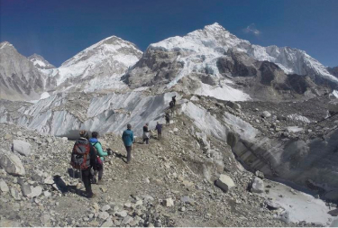
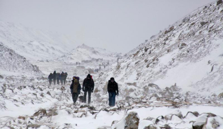
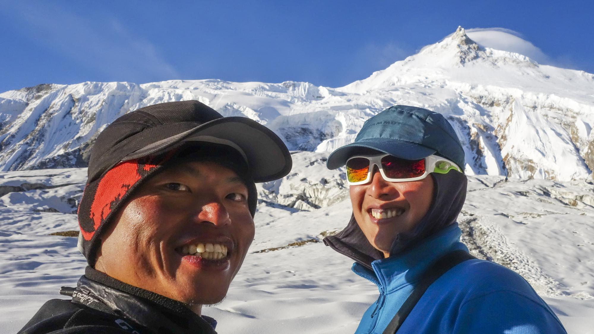
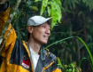
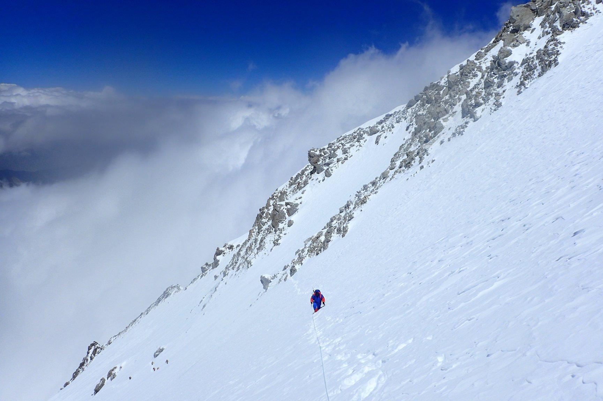
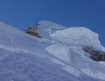

Reporter Saturday Features
【山思而行】登山中的死亡，對生命的凝視
登上山峰之途，就是在死亡的陰影之下，動用自身全部的感官與技藝，設法避開那些遭致危機的陷阱。圖為2016年2月，一支國際登山隊正跨越珠穆朗瑪峰基地營附近的冰川。（攝影／AP／Tashi Sherpa／達志影像）
環境・教育
刊出日期
2020/2/28
#體育
#山思而行


講到登山，普遍的印象可能是壯闊的山景，雲海朝霞萬丈金芒；也可能是山上人與人之間的情誼，過地形時伸手扶一把，或濕冷雨天一碗熱呼呼的泡麵。我們在山中感受生命各種美好，汲取養分。就算是逆境，痛苦會過去，美會留下，回到人間後依舊能量滿滿再度出發。
做為人，不知為何，我們傾向記憶美好，卻遺忘過程的苦痛。但我卻想，這是否讓我們理解、記憶一件事情性質的方式，也隨之產生偏誤？
我想說的是，登山是件會死人的運動。
某程度上，登上山巔之途，就是在死亡的陰影之下，動用自身全部的感官與技藝，設法避開那些遭致危機的陷阱。這樣的經驗本身，就是一種回報，高處的風景與抵達最高點的滿足，則是額外的嘉獎。
那是個風和日麗的早晨，我跟阿果從標高5,600公尺的馬卡魯峰前進基地營帳篷中醒來。我倆前一天剛攀升至7,150公尺處進行適應攀登並下山，往後一週將是一系列壞天氣週期的到來，所以我們正準備迎接休息日的放鬆作息。
慢慢踱進餐廳帳，吃完千篇一律的鬆餅加煎蛋，正想放個音樂泡杯咖啡，這時外面有人叫我。是Lakpa。
Lakpa是隔壁營區的商業團"Pioneer Adventure"的老闆，今年除了我跟阿果，馬卡魯峰這裡還有同樣來自台灣的登山者三條魚，她就在這個隊伍中。
原本以為Lakpa是來約我們晚上去他們隊上吃個飯之類的，興高采烈的走出去跟他打招呼，沒想到他表情挺嚴肅：
2017年3月，一隊登山者朝向尼泊爾羅布崎的登山營地前進。（攝影／AP／Tashi Sherpa／達志影像）
其實我們也常忽略，就算我們將自己關在由水泥與文明構成的防護罩中，離野性的大自然遠遠的，各種意外還是可能在不經意間降臨。但我們卻很容易欺騙自己，在日常文明生活中，死亡離我們很遠。加上華人文化將生死視作忌諱而不與談論，所以大多數人其實並不真正意識到，死亡其實比我們想像中靠近。
我真正意識到這件事情是2013年，那年我在當兵，因為身體背面一個莫名的黑色凸起去看醫生。原本以為是痣，切掉就好了。結果醫生一看面色凝重：「你這個可能是黑色素瘤，得趕快預約開刀之後做切片檢查。」我一開始還想說那啥，不就是個小肉瘤嗎？結果一google之下，發現如果真的是黑色素瘤，我活超過3年的機率不到10%。
當然後來切片檢查是良性，切掉就沒事了。但這件事情某程度上改變了我的世界觀。在熱愛的事情上投注生命與熱情，就算有其風險，依舊要直面死亡。如此，也才是真正認真的直面生命。
生命有各種路徑與選擇，60億人也許有60億種人生樣態。重要的，是釐清並接受，自己走在怎樣的生命之道上。若能無悔，就是一種幸運。這篇文章，與其說是寫給不特定受眾，不如說是寫給自己。
自開始登山並投入海外攀登以來，隨著逐漸深入，難免就有愈多認識的人永遠留在了山上。問我怎麼去看待這些逝去？也許有些沉重，但更多的是祝福。
相關文章
環境・教育
探險一步、前進一步──呂忠翰、張元植挑戰台灣人首登「野蠻巨峰」K2
2019/4/26

環境・教育
守在半山腰的指揮靈魂 「8千公尺英雄」推手連志展
2019/4/26

環境・教育
山，在這裡──紙上攻頂14座8千公尺高山
2019/4/26

環境・教育
【山思而行】高海拔的氧氣，就像自由
2019/4/26

2015年12月《報導者》正式上線，稟持深度、開放、非營利的精神，致力於公共領域調查報導，為讀者持續追蹤各項重要議題，共同打造多元的社會與媒體環境。
關於我們
聯絡我們
作者群
隱私政策
許可協議
捐款徵信
常見問題
New
影響力報告
加入我們
訂閱電子報
報導者基金會新聞專區